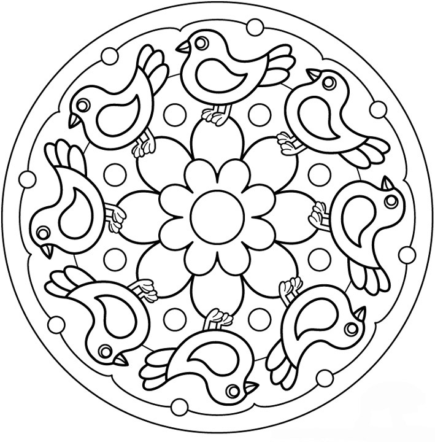

Then you can select different colors in the selector and paint the mandala with your finger or the mouse, this will play a background sound. You should know that you cannot go back or control, but you can correct creatively. Please refresh the page to get a new image and new audio. Take the time to connect with your interior.


Mandalas have been recognized in psychology as a therapeutic element. They are representations of our minds that facilitate concentration, transformation, and the assimilation of unconscious aspects.
® 2021 Ideofónica / Develop & Music by Alfonso Pretelt